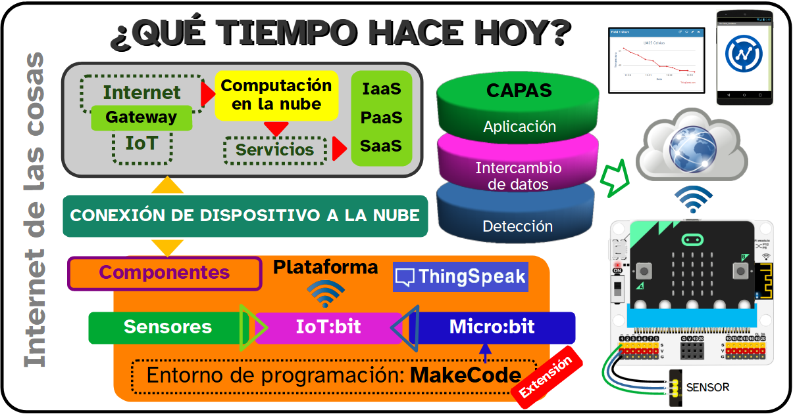

Ya sí que estás concluyendo esta aventura.
Después de haber superado el reto de crear un sistema IoT que registre automáticamente los datos de la estación meterorológica de tu Centro en la nube, solo te queda pensar un poco en todo lo que has aprendido mientras has ido avanzando.
Aquí te dejo un breve resumen de lo que has ido viendo a lo largo de todo el proceso. A buen seguro ya lo dominas todo porque lo has podido poner en práctica cuando te ha hecho falta.
Además esto puede convertirse en un punto de partida para seguir profundizando en el tema. Piensa que hay muchos más dispositivos que puedes crear y que algunos pueden ofrecer una respuesta controlada desde la nube. Se ha abierto un nuevo universo de posibiliades y tú estás ya capacitado para aprovecharlas todas.
